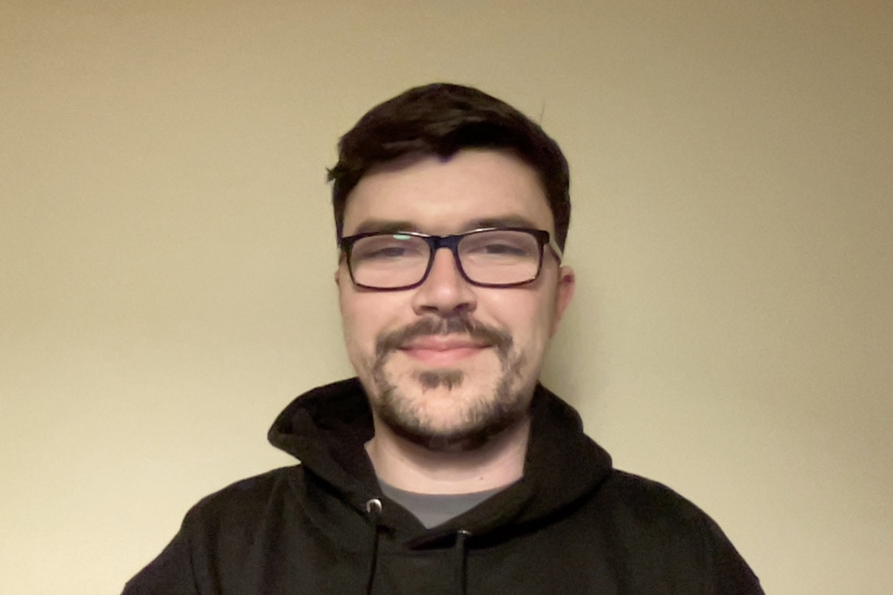

About
About

James Reed
London, UK
Self Taught Web Developer skilled in solving problems with HTML, CSS, SCSS, Bootstrap, Javascript, TypeScript,
React, Angular, Ionic, Jest, express.js, PostgreSQL, and Node.js. Have followed curriculums at FreeCodeCamp
and
The Odin Project on my coding journey for the past few years and completed a Full Stack software development
bootcamp at Northcoders. I am now working full time as a Junior Software Developer at UniTaskr where we are
building a new app.